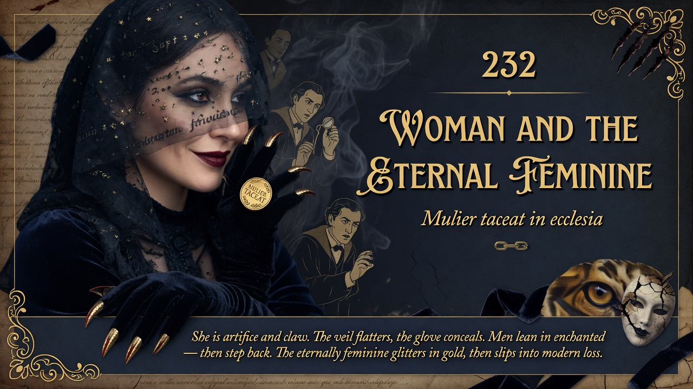

The "eternal feminine" is connected to art, appearance, and a different relationship with truth than men have. Forcing women into the same enlightenment model as men might actually strip away what's distinctive and valuable. Real differences between sexes might be worth keeping, not erasing.
The eternal feminine is tied to appearance, art, and a different relation to truth. Forcing the same enlightenment and independence on it risks defeminizing and uglifying.
Famous and controversial sequence on woman as part of diagnosing modern instincts and rank. Continues from 231’s personal truths.
2026 gender ideology, corporate feminism, and “smash the patriarchy” flatten the eternal feminine into sameness with man. The free spirit considers whether the differences Nietzsche saw — art of appearance, different economy of truth, tiger-claws beneath the glove — still mark real and valuable distinctions worth preserving rather than erasing in the name of independence or equality of outcome. Mulier taceat de muliere may still have bite.
